Teaching robots to move, and to see.
Hector Lugo — MS Computer Science at UTRGV. Reinforcement learning, computer vision, and vision-language models for robotics.
Get in touch →
Selected work
Robots, vision, and a few things built for fun.
-
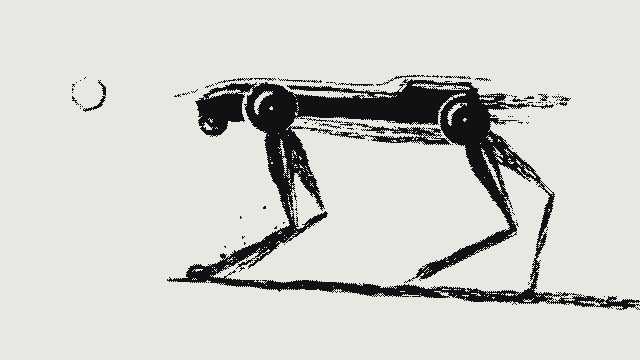
VLM + RL · MuJoCo · Qwen3-VL · PPO
VLM-Guided Legged Robot Navigation with Revisable Memory
A frozen Qwen3-VL navigator steers a PPO locomotion policy (Go2/G1, MuJoCo). I designed a revisable belief memory for out-of-view target search that drops stale beliefs on contradiction, with memoryless and frame-history ablations.
-
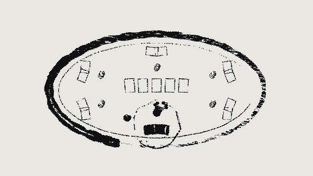
PPO · Gymnasium · FastAPI · WebSockets
Poker RL
A MaskablePPO self-play agent trained against a pool of frozen policy snapshots in RLCard 6-max No-Limit Hold'em, evaluated in mbb/hand with 95% CIs. Served as a real-time browser poker table over FastAPI + WebSockets, with CI and tests.
-
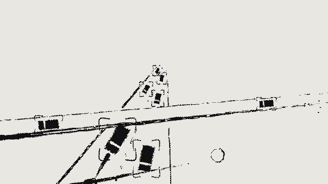
YOLO11 · ByteTrack · Docker · Computer Vision
FlowCount — Real-Time Traffic Analytics
YOLO11 detections feed a ByteTrack-style tracker (Kalman filter + Hungarian matching) for line counts, wrong-way alerts, zone occupancy, and heatmaps from webcam, video, or RTSP input. Web dashboard, Docker deploy, CI.
- 04
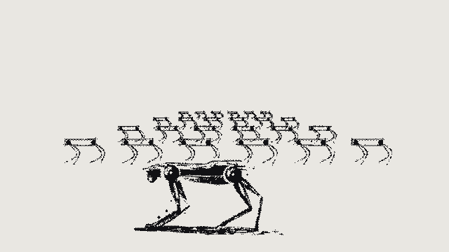
RL Isaac Lab Framework
A reinforcement-learning framework built on Isaac Lab for robotic simulation and training — multi-agent systems and legged locomotion in physics-based environments, with LocoMuJoCo for imitation and benchmarking.
- 05
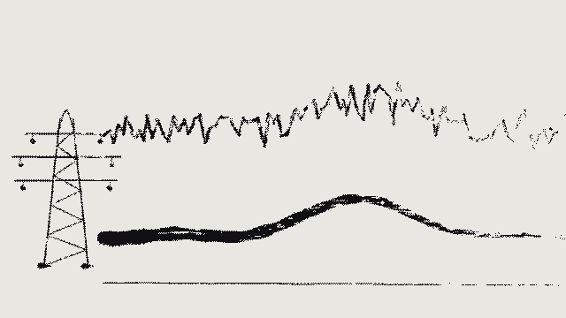
Signal Denoising — Idaho National Lab
A ResNet autoencoder denoises noisy smart-grid sensor signals for anomaly detection, with signal preprocessing and parallel computing that cut training time by over 93% (30 days → 1–2 days).
- 06
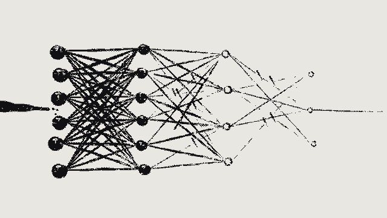
Senior AE Project — RL Compression
Reinforcement learning for neural-network compression — efficient deployment in resource-constrained environments and the impact of compression on RL performance.
- 07
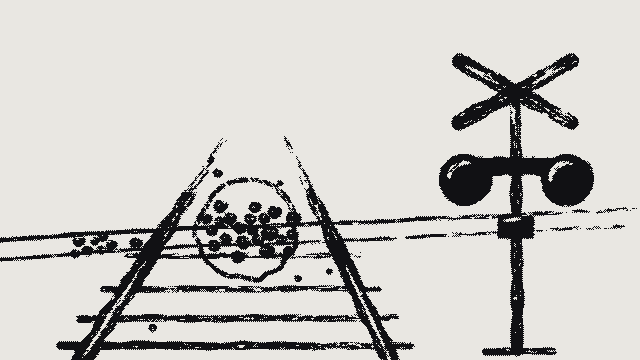
Summer REU — Railway Systems
Summer 2023 at UC Riverside — spectral clustering applied to USDOT railway crossing accident records, published at ASME JRC 2024.
- 08
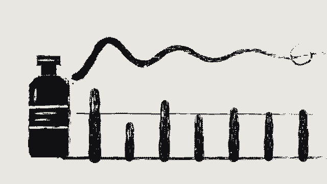
Personalized Chemotherapy Dosing
A Decision Transformer learns personalized dosing from offline patient data — treatment planning framed as offline RL, published at ICICT 2025.
- 09
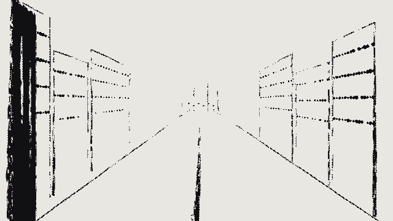
- 10
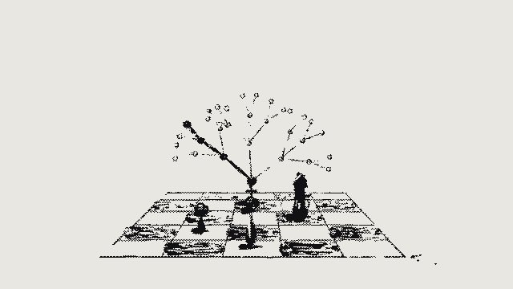
Chess-AlphaGO
AlphaZero-style self-play for Gardner chess (5×5) built on Pgx — batched, JIT-compiled rollouts on GPU with JAX and MCTS via Gumbel MuZero.
Experience
-
May 2026 — Aug 2026
AI/ML Research Intern
Air Force Research Laboratory (AFRL)
Built and open-sourced an evaluation harness for multi-camera video QA: 650K+ scored answers across 3 benchmarks and 2 vision-language models (Qwen2.5-VL, InternVL3) on a multi-GPU SLURM cluster. Benchmarked centralized fusion against per-stream agents, and agentic frame and clip selection (SigLIP, ViCLIP) against uniform sampling at matched budgets, with blind and random-control baselines to separate visual signal from answer-prior effects. Manuscript in preparation.
-
May 2025 — Jun 2026
Machine Learning Engineer Intern
Idaho National Laboratory
Engineered a ResNet autoencoder to denoise smart-grid sensor signals for anomaly detection. Cut model training time by over 93% (30 days to 1–2 days) through signal preprocessing and parallel computing.
-
Jan 2024 — Present
Teaching Assistant
The University of Texas Rio Grande Valley
Teach CS 1101 (Intro to CS) and Digital Image Processing to 40+ students, running lectures, labs, and grading.
-
Jun 2023 — Aug 2023
Data Science Research Intern
University of California, Riverside
Applied spectral clustering to USDOT railway crossing accident records. Published at ASME JRC 2024.
-
Jan 2023 — Aug 2026
Research Assistant
Machine Intelligence Lab, UTRGV
Researched hierarchical control for legged robots: a VLM navigator commanding RL locomotion policies on the Unitree Go2 and G1 humanoid. Co-authored an accepted IEEE ICMLA 2026 paper on VLM-guided quadruped navigation. Built Isaac Sim and MuJoCo environments and trained PPO locomotion and navigation policies for the Go2, including state autoencoders that cut compute cost and sped up training.
Research & publications
Two threads: hierarchical control for legged robots — a VLM navigator over PPO locomotion on the Unitree Go2 and G1 — and, with the Air Force Research Laboratory, when fusing multi-camera video actually helps a vision-language model.
- IEEE ICMLA 2026
Vision–Language Guided Quadruped Navigation with RL Control PDF · acceptedDOI 10.1109/ICMLA69890.2026.00094
- ICICT 2025
Personalized Chemotherapy Dosing Through Offline Reinforcement Learning · first author
- ICICT 2025
Offline Reinforcement Learning Approaches for Safe and Effective Smart Grid Control
- ASME JRC 2024
Spectral Clustering in Railway Crossing Accidents Analysis · code
© 2026 IEEE. Personal use of this material is permitted. Permission from IEEE must be obtained for all other uses.
About
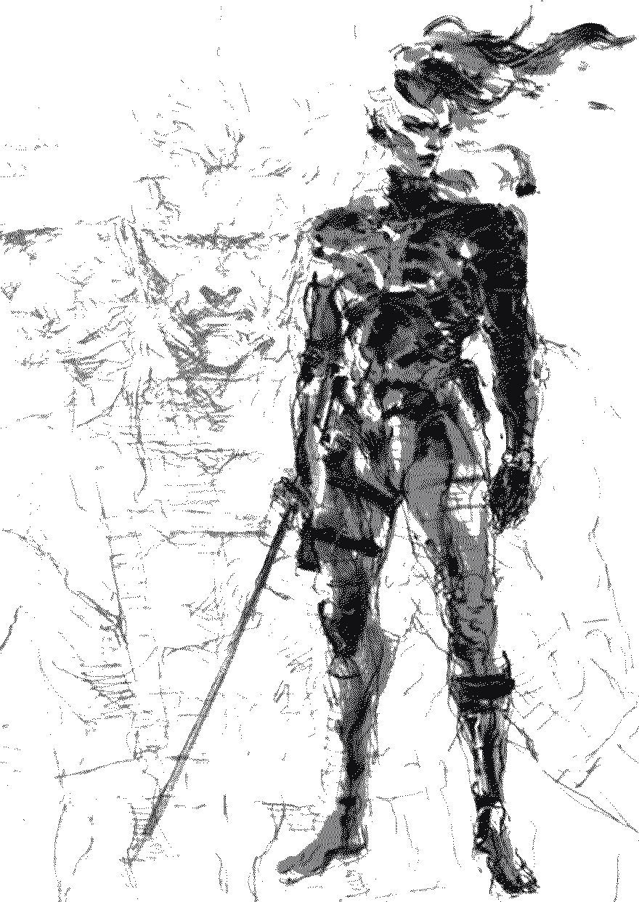
A Unitree Go2 quadruped robot drawn as a kinematic sketch: its twelve joints and legs inside a dotted silhouette, trotting in place. The tags name its hardware: twelve joint motors, hip, thigh and calf on each of four legs; a thigh and a calf of 0.213 metres; an IMU at the trunk's centre; a 4D LiDAR L2 and a wide-angle camera at the head.
control stack
- camera / video
- VLM navigator (Qwen3-VL)
- velocity command
- PPO locomotion policy
- joint targets
- motors
revisable belief memory · out-of-view target search
Unitree Go2 · kinematic sketch · dimensions from the go2_description URDFabout 15 kg · 70 × 31 × 40 cm standing
I'm Hector, a CS master's student at UTRGV. I work on getting robots to move and to understand what they're looking at: reinforcement learning for legged locomotion, computer vision, and vision-language models for navigation.
This summer I was an AI/ML research intern at the Air Force Research Laboratory, studying how vision-language models handle multi-camera video. The short version: when does it actually help to fuse camera feeds, and when does it not. I'm continuing that work with AFRL past the internship. Back at school I built RL pipelines in LocoMuJoCo and NVIDIA Isaac Sim and trained locomotion policies meant to survive contact with real hardware.
When I'm not training agents, I train myself: Taekwondo and hiking, slowly working up to summiting a real mountain.